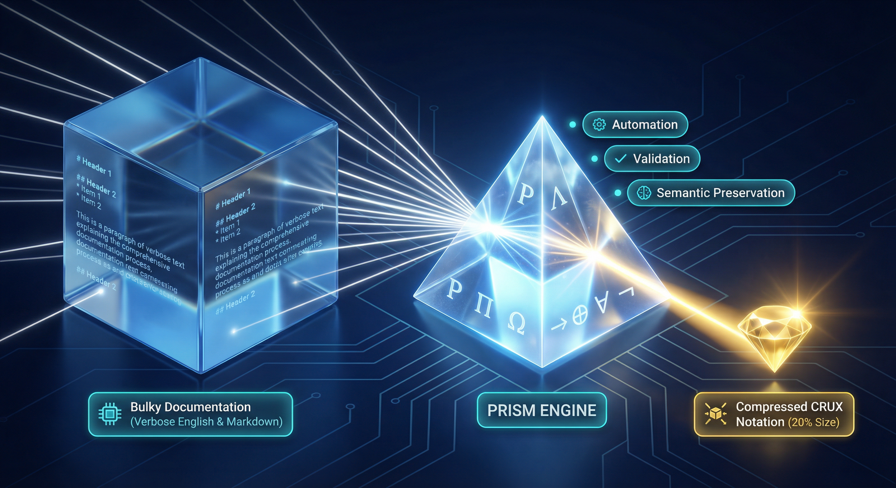
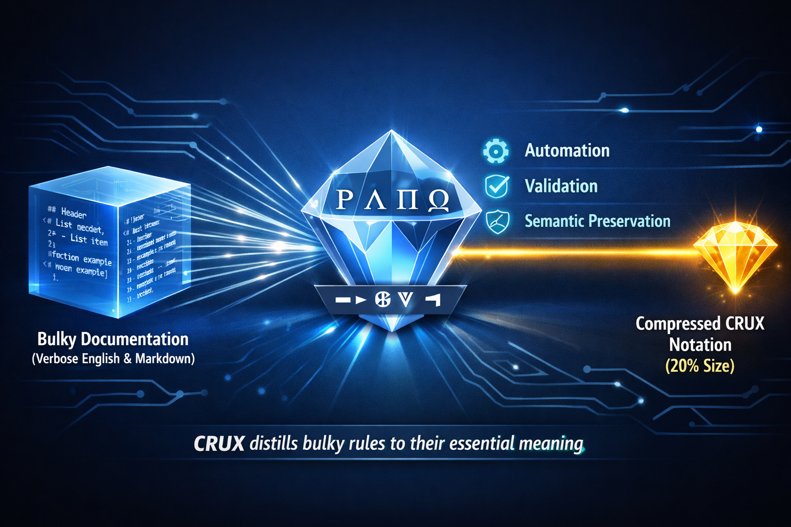

# Team Development Standards
## Code Style Requirements
### Indentation and Formatting
- Always use **2 spaces** for indentation
- **Never use tabs** under any circumstances
- Lines must not exceed **100 characters**
- Add trailing newline to all files
### Naming Conventions
| Element | Convention | Example |
|---------|------------|---------|
| Functions | camelCase | getUserData |
| Classes | PascalCase | UserService |
| Constants | UPPER_SNAKE | MAX_RETRIES |
### Error Handling
All errors must be:
1. Logged with full context
2. Wrapped in custom error classes
3. Include stack traces in development
... and so on for hundreds more lines
Context Window
Rules: 70%
Code
?
Your actual work is squeezed out
The Problem
AI assistants rely on context windows. Your rules consume tokens. As your rule library grows, context balloons.
You want readable, maintainable rules. LLMs just need actionable information.
The Approach
CRUX extracts semantic cores. LLMs interpret it natively—no decompression, no special training.
873 lines · ~6,278 tokens
Loading...
Loading...
CRUX COMPRESSED83 lines · ~1,059 tokens
Loading...
83% reduction — same semantic information
The Notation
A symbolic language LLMs interpret naturally. Click to explore.
CRUX captures meaning, not bytes. That principle extends to images — extract the semantic visual description, discard the pixels.
Original Image5.7 MB
CRUX Semantic Description1.0 KB
⟦CRUX:Generated_image.png
Ρ{CRUX-Compress concept diagram; marketing/hero visual}
Κ{prism=compression engine; beam=data flow; cube=input; gem=output}
Π.layout{
L→R flow; dark blue bg+circuit traces
input:cube@left→prism@center→output:gem@right
}
E.input{
cube:translucent blue+glass;lg
label="Bulky Documentation (Verbose English & Markdown)"
face∋visible code+markdown text ln
}
E.prism{
shape:diamond/crystal;white+blue glow
face∋[Ρ,Λ,Π,Ω] CRUX block symbols
base∋[→,⊕,∀,¬] encoding symbols
beams:input→prism=many thin white ln converging
}
E.output{
shape:sm golden diamond;bright glow+flare
label="Compressed CRUX Notation (20% Size)"
beam:prism→output=single golden ray
}
E.labels{
float@prism.right=[Automation,Validation,Semantic Preservation]
style=cyan+icon badges
}
Ω.metaphor{
verbose docs(lg)→CRUX engine(prism+symbols)→compact output(sm,20%)
visual=light refraction analogy; many rays→1 focused beam
msg="CRUX distills bulky rules to their essential meaning"
}
⟧
5,700xsize reduction
Lossypreserves meaning, not pixels
Decompressed by LLMs
Feed the .crux.md file to any LLM with image generation. The semantic description is enough to recreate a recognizable image.
Claude (from .crux.md)6.1 MB

ChatGPT (from .crux.md)2.2 MB

More Examples: From Art to Photography
CRUX captures semantic meaning regardless of image type — abstract art, complex compositions, and real-world photography all compress into rich, reconstructable notation.
Mixed-Media Art
Original2.2 MB
CRUX2.2 KB
⟦CRUX:2024-07-20-05-0c38502b3e6876faa11f611ca3160cec9f392e2a437d175cf17c0864f1c5d1db.png
Ρ{steampunk mixed-media art; mind+machine concept; digital painting}
Κ{moon=subconscious; gears=thoughts/ideas; profile=human mind; wave=flow/connection}
Π.layout{
L→R flow; crescent@left→gears dispersing→right edge
vertical: patchwork bg@top+middle; wave+circuit@bottom
style=painterly+textured; warm earth palette
}
E.moon_head{
shape:crescent moon enclosing human profile silhouette
profile:facing R; features=nose+lips+brow visible
interior:dark cosmic/starry; scattered stars+nebula texture
outline:cream/white curved arc; decorative flourish@top
position@left-center
}
E.gears{
collection:mechanical cogs+cogwheels; 30-50 elements
size:varied; lg@head→sm toward edges; dispersal gradient
colors:rust+copper+brown+cream+dark teal
notable:[
lg rusty cog w/ concentric circles @eye area;
orange-copper cog cluster @forehead;
dark bird-shaped cog+tail @upper-right
]
flow:emanating from head→R+up; explosion/dispersal pattern
style:some solid; some outline-only; varied line weights
}
E.background{
pattern:patchwork rectangles; abstract color blocks
colors:[rust orange,sage green,cream,teal,copper,brown]
texture:painterly brush strokes; weathered/aged aesthetic
borders:dark rusty frame @edges; horizontal stripe@top
}
E.wave{
shape:flowing S-curve; bottom third of composition
layers:[
dotted line wave;
parallel curved lines;
small scattered gears+circles
]
transition:organic curves→geometric circuit patterns @bottom-right
}
E.circuit{
position@bottom-right corner
pattern:technical grid lines; PCB-style traces
elements:rectangular paths+nodes; maze-like
colors:brown+rust on cream; aged tech aesthetic
}
Ω.metaphor{
theme:mind+machine synthesis; creativity+mechanics
visual=ideas(gears) flowing from subconscious(moon/profile)→outward
style=steampunk+mixed-media; analog+organic+technical
mood:contemplative+creative; warm+earthy
msg="thoughts emerge from the mind as mechanical processes; organic creativity meets structured logic"
}
⟧
Decompressed (from .crux.md)3.4 MB
Real-World Photography
Original296 KB
CRUX2.4 KB
⟦CRUX:IMG_3908-32a052d9-885d-42a8-bb21-b0363c335a13.png
Ρ{Bethesda Terrace Arcade; Central Park NYC; architectural photograph; tourist scene}
Κ{
arcade=covered walkway passage;
Minton=ornate Victorian encaustic tile;
Gothic Revival=pointed arch architectural style;
sandstone=warm tan carved stone
}
Π.layout{
POV:interior@ground level; wide angle
flow:L→R; dark interior@left→bright daylight@right
ceiling:Minton tiles→perspective converge@center-right
left wall:arched panels+decorative paintings
right side:row of Gothic arches→exterior terrace+greenery
floor:stone tiles;wet+reflective
}
E.ceiling{
shape:coffered grid panels
style:Minton encaustic tiles;blue+gold+rust+cream
pattern∋[geometric medallions,floral rosettes,intricate borders]
frame:dark wood+gilded trim beams
reflection:wet surface→mirror effect on floor
}
E.left_wall{
shape:Gothic pointed arches;carved sandstone surround
panels∋[
lattice window:diamond pattern;green+gold+red floral border,
painted murals:floral+botanical;red+green+gold on cream,
decorative relief:carved stonework
]
style:warm golden tan;ornate Victorian detail
}
E.right_arches{
shape:row of Gothic pointed arches;~6 visible
style:sandstone;warm tan
view:bright overexposed daylight→silhouettes
exterior∋[terrace,greenery,sky,fountain area]
}
E.floor{
shape:large stone tiles;rectangular grid
style:gray+tan;wet+reflective
reflection∋ceiling patterns+people silhouettes
}
E.people{
count:~20-30 tourists+visitors
distribution:scattered throughout arcade
activity:[walking,standing,photographing,resting]
notable:[
woman@left:seated;stroller+luggage,
woman@center-left:floral dress;standing,
child@center:toddler;orange luggage,
silhouettes@right:crowd against bright arches
]
style:casual tourist attire;summer
}
E.lighting{
contrast:high; interior shadow vs exterior brightness
left:warm golden ambient from ceiling+wall
right:bright overexposed daylight;blown highlights
floor:wet surface catches ceiling+arch reflections
}
Ω.metaphor{
theme:timeless grandeur meets tourist bustle
contrast:ornate Victorian craftsmanship vs casual modern visitors
atmosphere:historic elegance;warm+inviting;busy summer day
mood:awe at architectural beauty;sense of discovery
msg="historic architectural gem hidden beneath Central Park"
}
⟧
Decompressed (from .crux.md)3.2 MB
How It Works
1
Run /crux-compress @path/to/image.png in Cursor
2
The agent uses vision to extract semantic content into a .crux.md file
3
To "decompress", feed the .crux.md to any LLM with image generation
Code Compression
CRUX captures the semantic structure of code — function signatures, control flow, IO patterns — while stripping syntactic verbosity. LLMs reconstruct functionally equivalent code from the notation alone.
Original Script1,090 lines · ~9,764 tokens
Loading...
CRUX Compressed168 lines · ~1,665 tokens
Loading...
83%token reduction
6.5xfewer lines
90%confidence score
Decompressed by ChatGPT
An LLM given only the .crux.md file (no access to the original) reconstructed a functionally equivalent 893-line bash script — complete with platform detection, threshold checks, JSON output, and proper error handling.
ChatGPT 5.2 (from .crux.md only)893 lines
Loading...
What CRUX Preserves
Λ
Function signaturesAll 25+ function names preserved verbatim with parameter types and return values
Φ
Configuration & thresholdsExact threshold values, constants, and state variables maintained
Γ
Control flow & orchestrationMain execution flow, section dispatch, and exit code logic
Ω
Decompression guidanceemulate=shellcheck tells LLMs which linting semantics to apply
How It Works
1
Run /crux-compress @path/to/script.sh in Cursor
2
The agent extracts semantic structure into a .crux.md file using Λ, Γ, Φ blocks
3
To "decompress", an LLM reconstructs functionally equivalent code from the .crux.md
Quickstart
⚠
EXPERIMENTAL — Expect breaking changes. Your feedback shapes the spec.